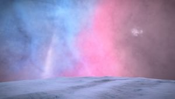

It was here, May 21st, 3302 that the members of 1st Quadrant Discovery Expedition landed at Waypoint 1 – coordinates 32.131 x -0.191. It has been 7 months since that awesome journey took me through the Veil West nebula, and now, I want to go back.

To honor the commanders who took part in 1st QDE, and celebrate the beginning of 3303, I will be heading back to Waypoint 1 on New Year’s Eve and I will be there until mid-day New Year’s Day. This is not an official Canonn event, but everyone is welcome to join in on this fun little excursion out to see an awesome nebula. Be advised – DL-Y D68 D 5 C is 347,560ls from the center star. Bring your SRVs for some running around and fun stuff. There may be SRV battles for those who want to duel (I recommend bringing multiple SRVs if you want to join in on that) Also, we don’t have a giant ball to drop to mark the new year, so I am going to attempt to have CMDR Zunaro lift me up about 2.5km in the air with his ship, and we’ll drop an SRV instead. Again, all are welcome to join us out in Veil West.
The commanders who took part in the 1st Quadrant Discovery Expedition are as follows:
Zunaro – Expedition Leader
Issac Asmoiv
Drogo Dinglebutt
Pappyoblue
Vytrost
Tiberious_Dawn
Flash_Baggins
Vaelel
Isaac Hunt
Horatiu Hefeweizen
TSgt Paladin
Dutch Foster
Verzweiflung
Cmdr Dutch Foster